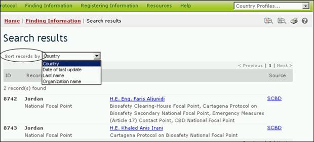

Para cambiar la forma en se filtran resultados de búsqueda, el usuario puede seleccionar una opción diferente, en el menú que se despliega en Filtrar resultados por. Este menú aparece en cualquiera de las páginas de resultados de búsqueda. La lista incluirá solamente aquellas opciones que son relevantes para el tipo de búsqueda que el usuario ha llevado a cabo.

Figure 65
Ente las opciones de filtro que pueden estar disponibles para el usuario se incluyen las siguientes:
País: Muestra los resultados de búsqueda ordenados alfabéticamente por nombre de país.
Fecha de última actualización: Muestra los resultados de búsqueda ordenados por la fecha en la que fueron agregados o actualizados, mostrando primero los registros que fueron modificados más recientemente.
Apellido: Muestra los resultados de búsqueda ordenados alfabéticamente por el apellido de la persona o punto de contacto.
Rasgo de OVM: Muestra los resultados de búsqueda ordenados alfabéticamente por el rasgo o característica introducida. (Para ver una lista completa de rasgos introducidos, consulte el diccionario de referencia del CIISB)
Nombre del gen: Muestra los resultados de búsqueda ordenados alfabéticamente por el nombre del gen insertado. (Para ver una lista completa de genes insertados, consulte el Registro de genes)
Nombre del organismo: Muestra los resultados de búsqueda ordenados alfabéticamente por el nombre del organismo parental, receptor o donante.
Nombre de la organización: Muestra los resultados de búsqueda ordenados alfabéticamente por el nombre de la organización (puede ser una autoridad nacional competente u organizaciones de bioseguridad).
Fecha de inicio: Muestra los resultados de búsqueda ordenados por fecha en que está previsto que comiencen los proyectos u oportunidades de creación de capacidad.
Área temática: Muestra los resultados de búsqueda agrupados según el área temática abordada (por ejemplo, tipo de OVM o uso previsto).
Situación Taxonómica: Muestra los resultados ordenados alfabéticamente de acuerdo con el nombre científico de organismo.
Técnica usada: Muestra los resultados de búsqueda ordenados alfabéticamente por técnica usada para introducir la modificación.
Título: Muestra los resultados de búsqueda ordenados alfabéticamente por título de registro.
Tipo de registro: Muestra los resultados de búsqueda agrupados según el tipo de registro.
Identificación única: Muestra los resultados de búsqueda ordenados en forma alfa-numérica por código de identificación exclusiva. (Para ver una lista completa y descripción de códigos de identificación exclusiva, consulte el Registro de OVM.).